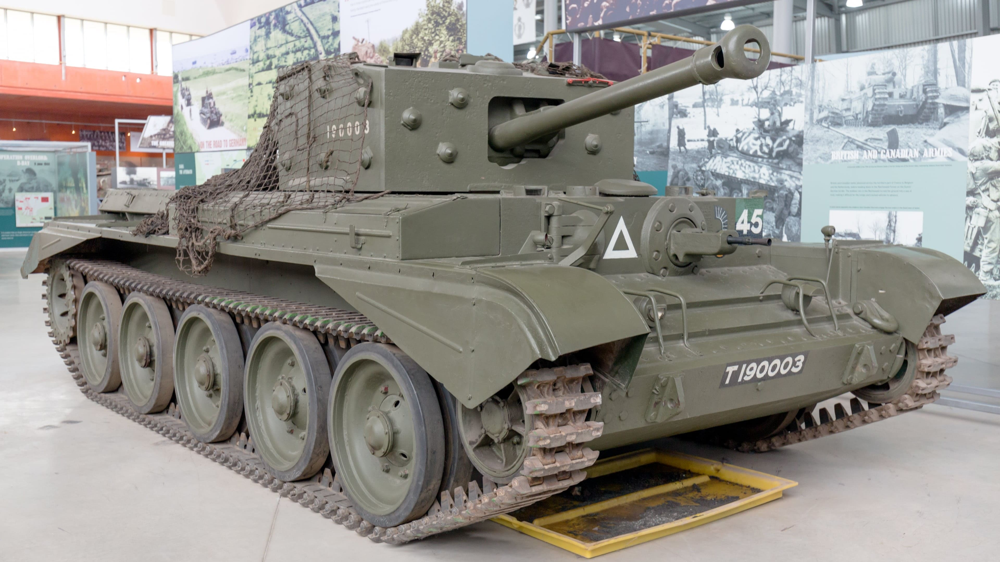
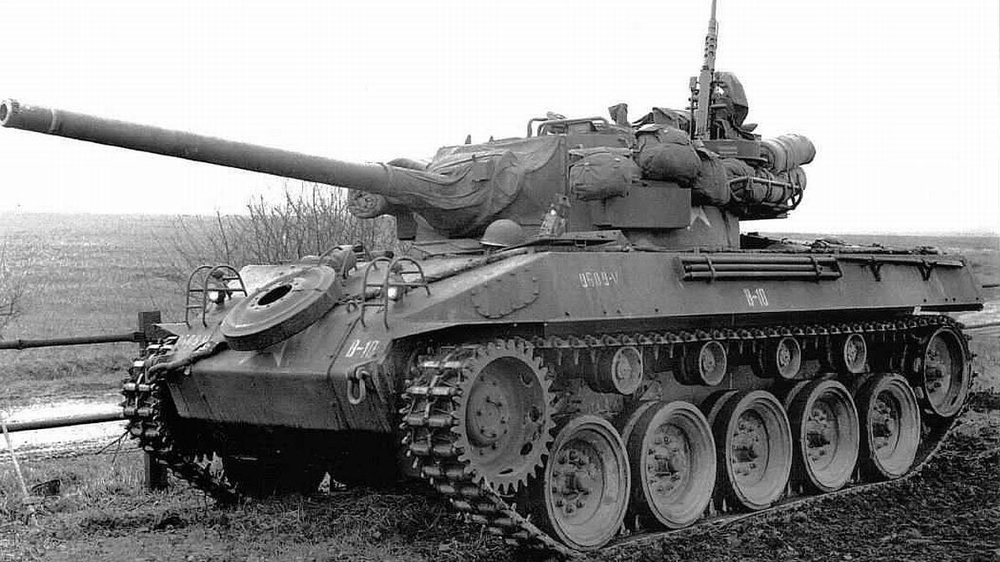
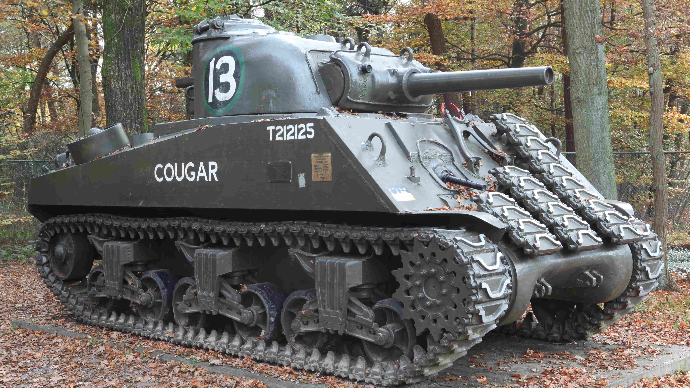

Pz. V Panther
Panther Ausf. D tanks, 1943

Pz. VI Tiger I
Tiger I in northern France, March 1944

Cromwell
A Cromwell IV at the Bovington Tank Museum

Churchill IV
Infantry heavy tank Churchill IV

M18 Hellcat
American M18 Hellcat Tank Destroyer

M4 Sherman
An M4 (105) Sherman tank with spare track-links welded on its front for additional armor protection, preserved at the Langenberg Liberation Memorial in Ede, Netherlands